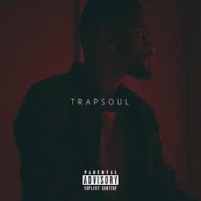
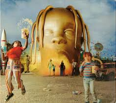
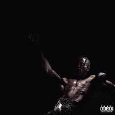
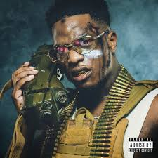
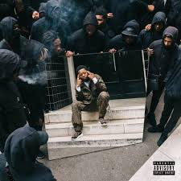
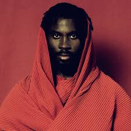

Artistes populaires

Bryson Tiller
R&B / TrapSoul - Connu pour son style mélodique et ses textes romantiques.

Trapsoul — Don't True to Self — Right My Wrongs
True to Self — Right My Wrongs

PartyNextDoor
R&B / Pop - Mélodies sensuelles et voix autotunée.
 PartyNextDoor 3 — Loyal
PartyNextDoor 3 — Loyal PartyNextDoor 4 — Come and See Me
PartyNextDoor 4 — Come and See Me

Chris Brown
R&B / Pop - Danseur et chanteur emblématique du R&B américain.
 F.A.M.E. — Yeah 3x
F.A.M.E. — Yeah 3x Royalty — Fine China
Royalty — Fine China
Sheltoh
R&B - Mélodies modernes et textes émotionnels.
 No Need to Tears — Best Song
No Need to Tears — Best Song

Snoop Dogg
Rap US - Icône du rap West Coast.
 Gangsta Grilz I Still Got It — Song 1
Gangsta Grilz I Still Got It — Song 1 Tha Last Meal — Still a G Thang
Tha Last Meal — Still a G Thang

Kendrick Lamar
Rap US - Réputé pour ses textes engagés et ses albums conceptuels.
 Good Kid, M.A.A.D City — Swimming Pools
Good Kid, M.A.A.D City — Swimming Pools DAMN. — HUMBLE.
DAMN. — HUMBLE.

Drake
Rap US - Superstar internationale et multi-platine.
 Take Care — Marvins Room
Take Care — Marvins Room Scorpion — In My Feelings
Scorpion — In My Feelings

Travis Scott
Rap US - Connu pour ses concerts immersifs et son style trap innovant.

Astroworld — Sicko Mode
Utopia — Album Song
Niska
Rap FR - Célèbre pour ses refrains accrocheurs et son flow rapide.

Commando — Réseaux Mr Sal — Salé
Mr Sal — Salé

Ninho
Rap FR - L’un des meilleurs lyricistes du rap français actuel.
 Destin — La vie qu’on mène
Destin — La vie qu’on mène M.I.L.S 3 — Goutte d’eau
M.I.L.S 3 — Goutte d’eau
Leto
Rap FR - Flow puissant et mélodies trap.
 100 Visages — Visages
100 Visages — Visages
17% — Pour de vrai

Damso
Rap FR - Textes poétiques et sombres, mélanges de trap et de rap conscient.
 Batterie faible — Macarena
Batterie faible — Macarena QALF — God Bless
QALF — God Bless